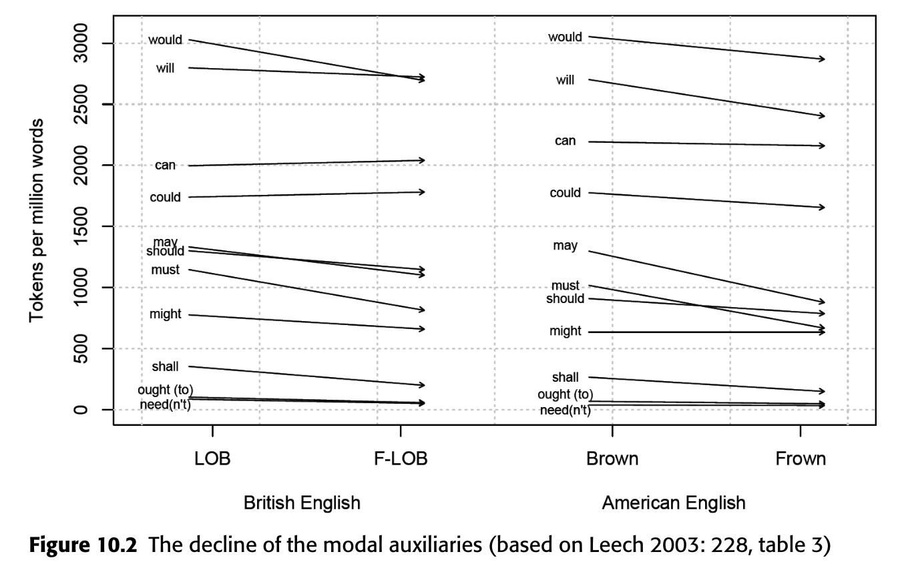
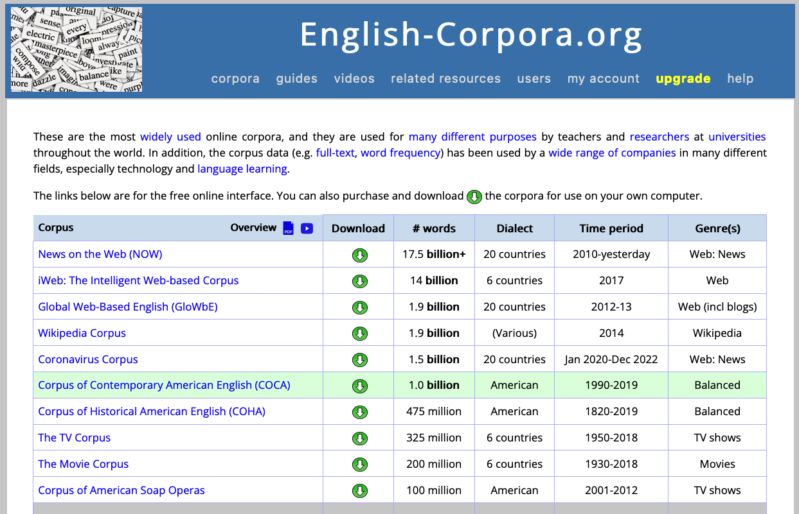
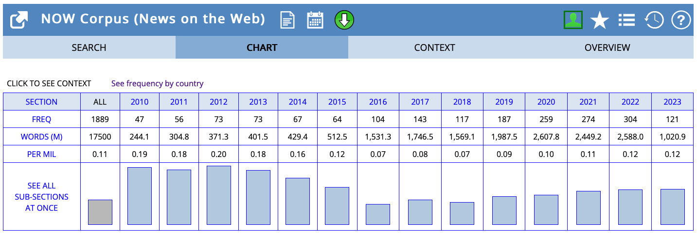
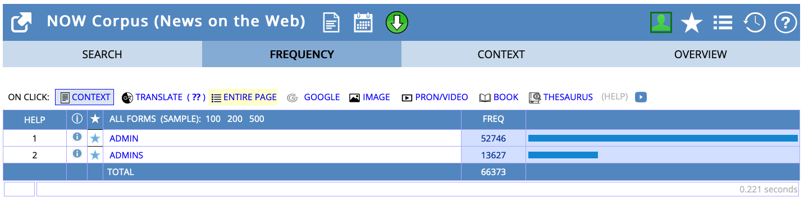
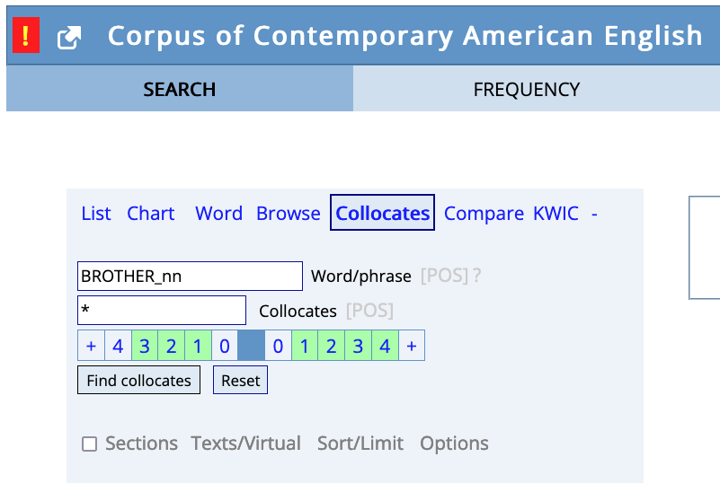
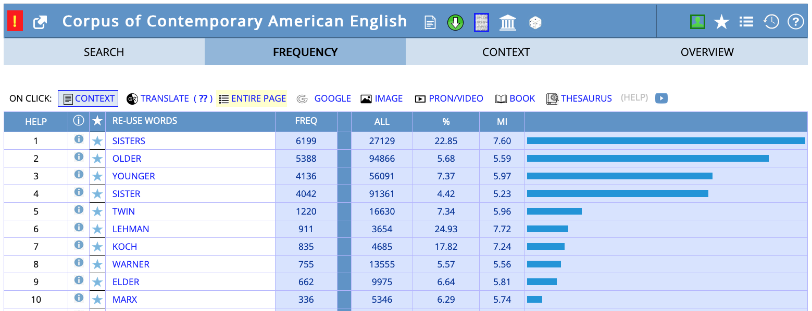
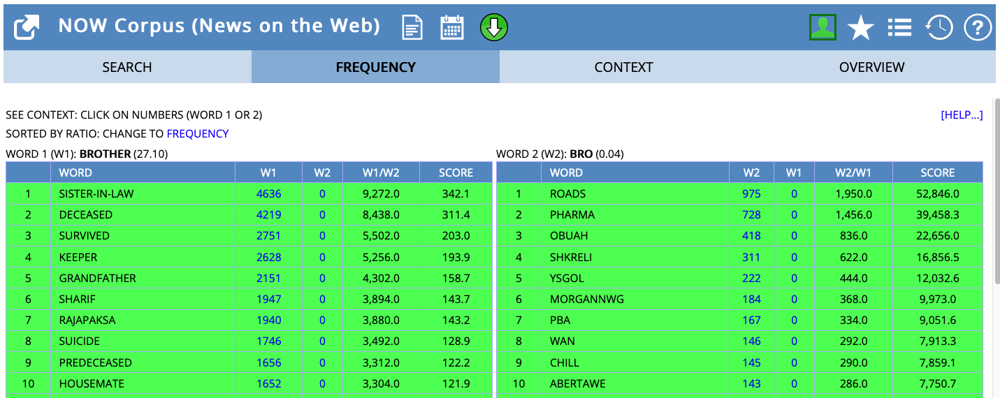
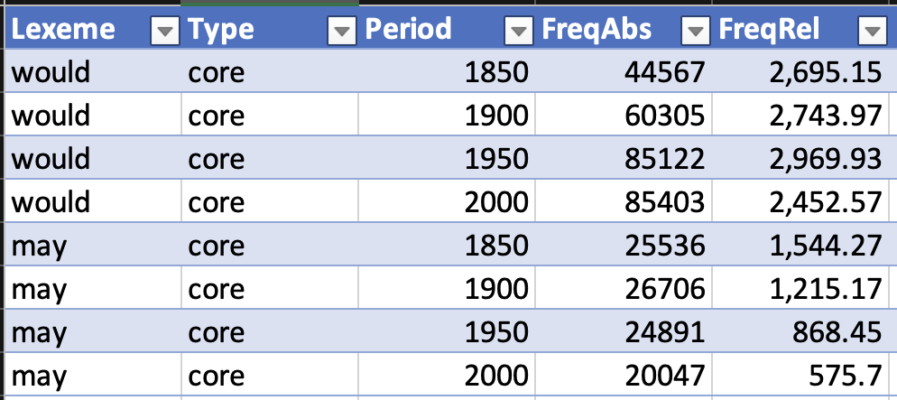
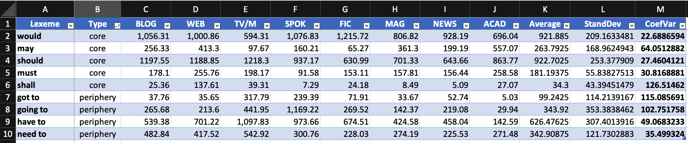
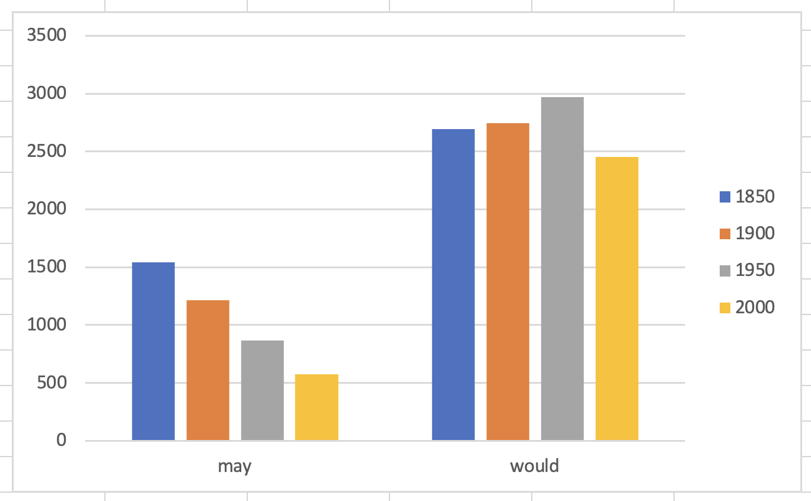

Language Change
Seminar ‘Corpus Linguistics’
July 17, 2025
Session Overview
- Language change fundamentals
- Modal verbs in English: frequency changes over time Hilpert (2015)
- Practice: hands-on analysis using COHA and COCA on english-corpora.org
Language Change
What is language change?
- systematic modifications in language over time
- affects all linguistic levels: phonology, morphology, syntax, semantics
Examples
- phonology: knight /naɪt/ vs Middle English /kniçt/
- morphology: you (singular) replacing thou/thee
- syntax: do-support in questions (Do you know? vs Know you?)
- semantics: nice shifting from ‘foolish’ to ‘pleasant’
→ corpus linguistics provides empirical evidence for change
Research Questions in Language Change
- What changes? → linguistic features
- word order patterns: do-support in questions (Do you know? vs Know you?)
- use of modal verbs: must declining from 2000 to 500 per million words
- When does it change? → timing and pace
- thou/thee disappears rapidly in 17th century
- gradual decline of shall over 200 years
- How does it change? → mechanisms and patterns
- example: grammaticalization of going to → gonna
- concrete: have to replaces must in obligation contexts
- Who changes? → social factors
- factors: age groups, social classes, gender differences
- example: younger speakers use gonna more than older speakers
- Why does it change? → causes and motivations
- factors: social prestige, language contact, simplification
- example: ain’t stigmatised, speakers switch to isn’t
Corpus Methods for Language Change
- Diachronic corpora: e.g. EEBO, COHA, Gutenberg, COCA, NOW, English Trends
- Frequency analysis: absolute and relative frequencies over time
- Text type variation: register-specific changes
- Collocation analysis: changing semantic associations
- Statistical measures: coefficient of variation, significance testing
Modal Verbs in English
Theoretical Background: Hilpert (2015)
Another domain of English grammar that is currently undergoing change is the domain of modality, specifically the modal auxiliaries. In the most general of terms, the situation is that several of the core modal auxiliaries are declining in text frequency (Leech 2003; Mair 2006), while at the same time new quasi-modal elements are undergoing grammaticalization (Krug 2000).
Key question: Why certain forms decline while others rise?
Core vs Peripheral Modal Verbs
Core Modal Verbs
- will, would
- can, could
- may, might
- shall, should
- must
Peripheral Modal Verbs
- BE going to
- have to
- got to
- need to
Frequency Changes Over Time
Frequency changes of modal verbs over time.
Overall
- ↘️ core modals declining
- ↗️ peripheral modals rising
Interaction between frequency changes and causes
“The result is a dynamic situation that raises a number of questions.
- For instance, it has been asked why certain forms are in decline whereas others are on the upswing.
- Is there a relation between these developments, and if so, how do we assign the roles of cause and effect?”
Potential cause: text type variation
- “One explanation for the discrepancies between the tendencies in the Brown family of corpora and in the Time corpus is the composition of the respective corpora.
- Whereas the Brown corpora represent a balanced set of genres, the Time corpus represents a single text type.
- To test whether genre differences explain the discrepancies, Millar (2009: 207) compares his Time results against an analysis of the press genres in the Brown and Frown corpora, finding, however, no satisfactory convergence between the two.
- Millar thus invokes sampling error as an explanation, which is criticized by Leech (2011a), who replicates the results from the Brown family of corpora on the basis of the balanced diachronic mega-corpora COCA and COHA (Davies 2008, 2010).
- These results leave the frequency increases of can, could, and may in Time in need of an explanation, for which Leech (2011a: 557) suggests a genre-specific style change in journalistic writing.”
Practice: Corpus Analysis
Study objectives
- Frequency analysis: track modal verb usage over time in COHA
- Text type variation: examine register preferences in COCA
How to use english-corpora.org
Overview of Corpora
Views and Query Types
List View

Chart View
Query decaf in the NOW corpus
Query Syntax
Lexemes
Query ADMIN in the NOW corpus
Wildcards
Query admin* in the NOW corpus (list view)
Word Classes

Query run_nn in the NOW corpus

Query run_vv in the NOW corpus
Collocations
Collocates for BROTHER_nn

BROTHER_nn
BROTHER_nnComparing Collocates: brother vs bro


Corpus Resources
COHA (Corpus of Historical American English)
- 400+ million words, 1810–2009
- decade-by-decade analysis possible
- fiction and non-fiction texts
COCA (Corpus of Contemporary American English)
- 1+ billion words, 1990–present
- text type categories: spoken, fiction, magazine, newspaper, academic
- enables register analysis
Step 1: Frequency Analysis in COHA
Target decades: 1850, 1900, 1950, 2000
CQL queries for modals:
- core:
can_v _vwill_v _vmay_v _vshall_v _vmust_v _v
- peripheral:
HAVE_v to _vBE_v going to _vGOT_v to _vNEED_v to _v
Data Collection
- absolute and relative frequencies per decade
- model Excel sheet: https://1drv.ms/x/c/9a2ec97d593520f9/EezC1WmhjPNEiVR-eERIIU8BdRV5kbqEGw-17MMMJAr2gQ
Target Format
Step 2: Text Type Analysis in COCA
CQL queries for modals:
- core:
can_v _vwill_v _vmay_v _vshall_v _vmust_v _v
- peripheral:
BE going to _v
Text type categories:
BLOG: blogsWEB: web pagesTV/M: TV and moviesSPOK: spokenFIC: fictionMAG: magazinesNEWS: newsACAD: academic
Data Format
Data format for text type analysis
Step 3: Statistical Analysis
Coefficient of Variation (CV)
Definition: Statistical measure describing relative variability of data
\[ \begin{align} CV &= \left( \frac{\sigma}{\mu} \right) \times 100 \\ &= \frac{\text{Standard Deviation}}{\text{Mean}} \times 100 \end{align} \]
Excel Calculation
- Column 1: Mean:
=AVERAGE(range) - Column 2: Standard Deviation:
=STDEV.S(range) - Column 3: CV:
=(STDEV/MEAN)*100
Expected Results
Frequency Changes Over Time
For individual modals
Frequency changes for may and would.
Across modal types

Frequency changes across modal types: core vs peripheral.
Text Type Variation
Text type variation for individual modals

Coefficient of variation for individual modals.
Text type variation for groups of modals

Coefficient of variation for groups of modals: core vs peripheral.
Study questions
- Which modal verbs show the strongest frequency changes?
- Are there differences between core and peripheral modals?
- Which modals show the highest text type variation?
- Are there differences between core and peripheral modals?
- How do frequency changes relate to text type preferences?
Summary
- modal verbs show systematic frequency changes
- several core modals are declining
- peripheral modals are rising
- language change and text type variation seem to be related (in the case of modals)
- corpus methods provide empirical evidence